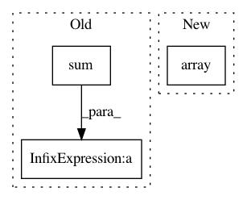

9a7723cbc0930b2240bf2b64932ddb4c61e3d356,tests/test_zernike.py,,_slow_zernike,#,27
Before Change
Xn = ( (X -cofx)/radius).ravel()
Yn = ( (Y -cofx)/radius).ravel()
k = (np.sqrt(Xn**2 + Yn**2) <= 1.)
frac_center = np.array(P[k], np.double)/img.sum()
Yn = Yn[k]
Xn = Xn[k]
frac_center = frac_center.ravel()
After Change
if (n-l)%2 == 0:
z = _slow_znl(Yn, Xn, frac_center, float(n), float(l))
zvalues.append(abs(z))
return np.array(zvalues)
def test_zernike():
A = (np.arange(256) % 14).reshape((16, 16))
slow = _slow_zernike(A, 12, 8.)
In pattern: SUPERPATTERN
Frequency: 3
Non-data size: 3
Instances
Project Name: luispedro/mahotas
Commit Name: 9a7723cbc0930b2240bf2b64932ddb4c61e3d356
Time: 2010-09-01
Author: lpc@cmu.edu
File Name: tests/test_zernike.py
Class Name:
Method Name: _slow_zernike
Project Name: CamDavidsonPilon/lifelines
Commit Name: b46c893e2c0f9cd505b597c2ff215a0df04b6050
Time: 2020-05-19
Author: cam.davidson.pilon@gmail.com
File Name: lifelines/fitters/npmle.py
Class Name:
Method Name: log_likelihood
Project Name: astroML/astroML
Commit Name: f388923837f92a9de81b97898eadde495353331b
Time: 2018-11-16
Author: bsipocz@gmail.com
File Name: astroML/density_estimation/gauss_mixture.py
Class Name: GaussianMixture1D
Method Name: __init__